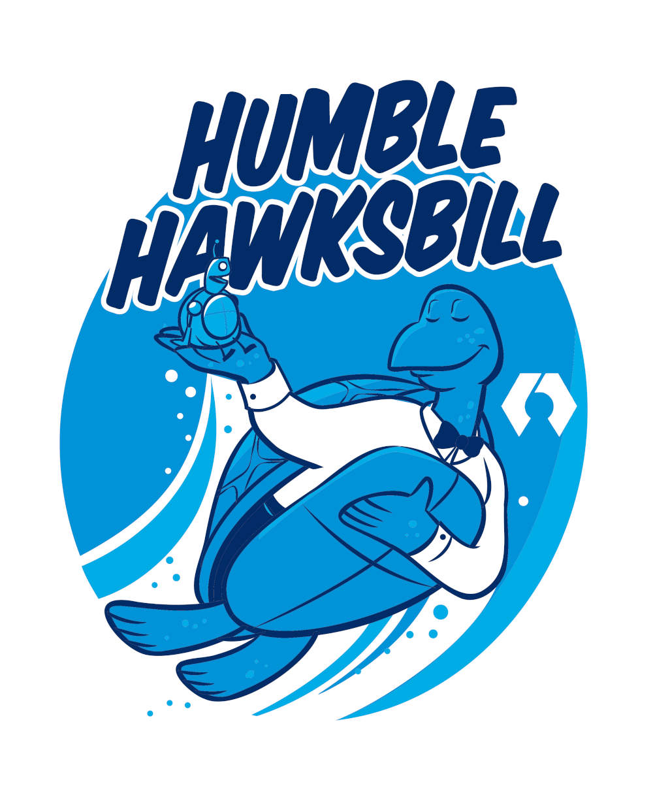
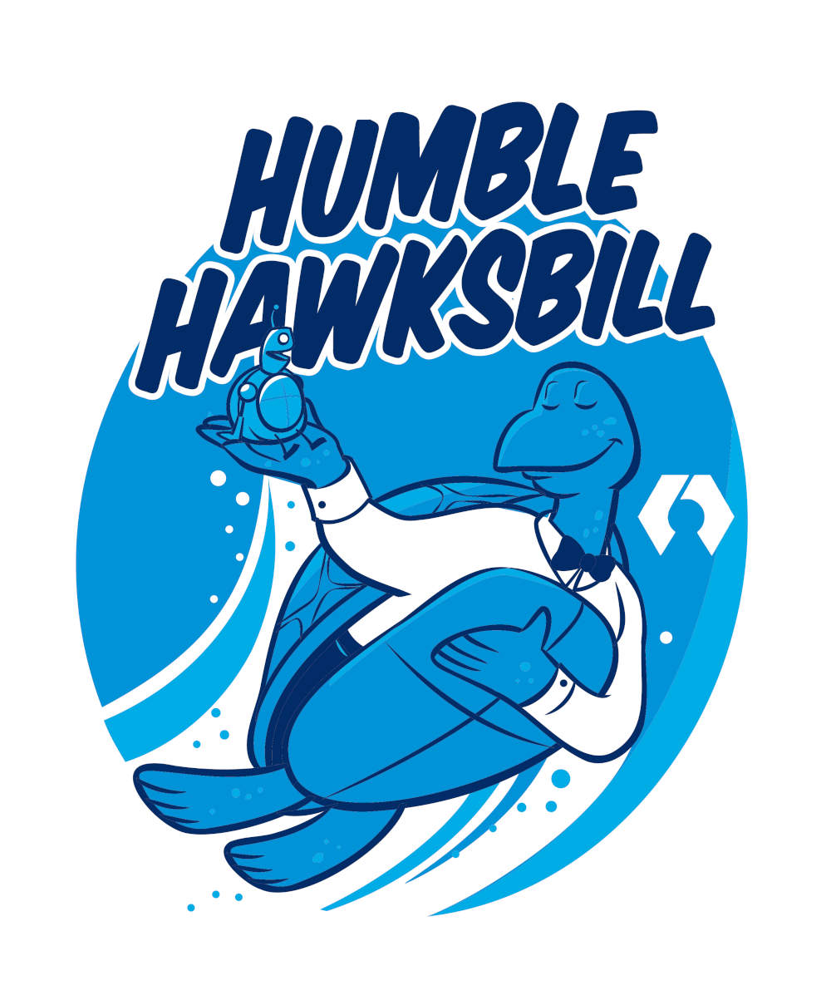

I am happy to announce that we just launched the ROSCon 2023 website! This year’s ROSCon will take place in New Orleans, Louisiana on October 18, 2023 → October 20, 2023. This is the first ROSCon in North America in five years and we’re really looking forward to seeing everyone in-person again. In the next few weeks we’ll put out the call for talks and workshops along with prospectus for sponsors (you may want to give your HR & marketing departments a heads up). We’re also working on a few surprises for this year’s event.
READ MOREROS - Robot Operating System
The Robot Operating System (ROS) is a set of software libraries and tools that help you build robot applications. From drivers to state-of-the-art algorithms, and with powerful developer tools, ROS has what you need for your next robotics project. And it's all open source.

What is ROS?
ROS Videos
"
Install

Noetic Ninjemys
ROS Noetic Ninjemys is latest ROS 1 LTS Release targeted at the Ubuntu 20.04 (Focal) release, though other systems are supported to varying degrees.
 Learn More

Learn More

ROS Humble Hawksbill
Humble Hawksbill is the latest long term support ROS 2 release. It installs easily on Ubuntu 22.04 Jammy Jellyfish and Windows 10.
Learn More
Support
There are several mechanisms in place to support the ROS community, each with its own purpose.
Documentation and tutorials for ROS 2
Ask questions.
Get answers.
All ROS versions
Hear the latest discussions
Legacy documentation and tutorials for ROS 1